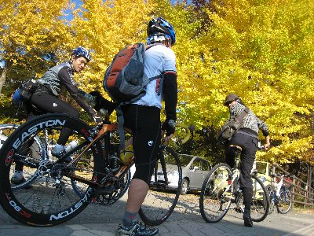
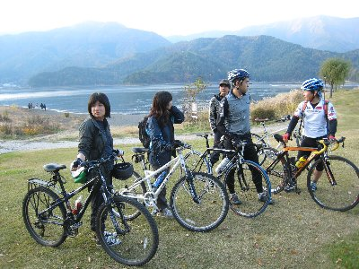
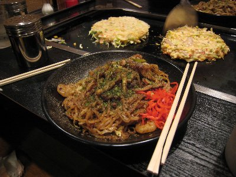

紅葉とグルメツーリング | 2009年11月 幹事：Ryuuさん |
|---|---|
| 自転車で気持ち良く走れる時期は？ やっぱり春と秋かな。暑くもなく寒くもなく、季節の移り変わりが楽しめ、風が心地いいからね。 そして秋と言えば、食欲の秋。食べ物がおいしい季節だよね。ってわけで、グルメなんちゃってツーリングをやりました！ 今回の参加メンバーは、初参加の”ごつ”さんを含め６人。場所は河口湖畔。 なんちゃってツーリングなので、いつもより遅い集合時間だったのですが、私とたかにぃが30分遅刻。いや、渋滞してたんだって。ほんとに。朝霧道の駅まで2時間ってありえないでしょう？ とりあえず昼食。すでにグルメツーのスタートです。西湖近くの野鳥の森公園に隣接のレストランでほうとうと炊き込みご飯セットを頂きました。ほうとう美味しいな〜。そう言えば来週のキャンプでも、ほうとう鍋やるんだった。 | |
 ほうとう と 炊き込みご飯 |  周りの木々が赤く染まってました |
| 美味しい昼食後、河口湖に移動してツーリング開始しました。スタートは河口湖南西に位置する「道の駅かつやま」です。 最初は西湖でって話だったのですが、西湖は明日自転車レースが開催されるため、その参加者が沢山走っていたのです。すごいスピードで。まあ、河口湖廻ってから西湖行こうかとも考えていたのですが。 湖畔の木が紅葉しているのを見ながら、河口湖を反時計回りに走りました。 しばらく走ると、黄色く色づいた大きなイチョウの木があったので、ちょっと写真撮影。イチョウって、黄色くなるときは木全体が染まりますよね。 またまた走ってしばらくすると、道の両側に紅葉した紅葉が並びだして、車道も渋滞気味なってきました。やっぱり紅葉シーズンだからね〜 なんて思っていたら「紅葉まつり」会場発見！ 会場と言っても、テントが立ち並び、飲食店が軒を連ねているだけなのですが、グルメツーとしては、ここも立派に立ち寄り地点です♪ 各自、猪鍋や串カツを頬張りました。猪鍋の話が出たとこころで、たかにぃが来週のキャンプに猪肉を持ってきてくれることになりました！ うれしいな〜 さて、食べた割に動いていない気がしますが、またまた走り始めました。湖畔北側は、紅葉も多くて自転車で走るのには良い感じです。 この辺りまで来ると富士山が山間から見えます。道草が長かったのか、日が傾き始め、とても西湖まで廻っている時間はないようです。西湖は諦めそのまま河口湖を一周して戻りました。 | |
|  |  |
| Ryuuさんが、明日の自転車レースの登録を済ませると、日はとっぷり暮れてしまいました。ひとっ風呂浴びてからツーリング〆の夕食です。 誰かが「富士宮やきそば」と言ったので、富士宮の浅間大社まで来て、鉄板焼き屋に入りました。 当然、富士宮焼きそばを頼み、お好み焼きとタコ焼も注文。富士宮焼きそばはお店が焼いてくれるけど、お好み焼きとタコ焼は自分達で焼きます。 ここの富士宮焼きそば美味しかった〜。歯ごたえのある麺良いです。 お好み焼きも、自分達で焼いたのに美味しかった！ 焼いた人も上手いけど、これ具と言うか粉が違うのかな〜 タコ焼は女性陣が挑戦。いづれもタコ焼初挑戦です。思っていた以上に丸くするのが難しいようでしたが、最後はまん丸になり、美味しく頂きました。 グルメツー。こんな休日も良いですよね。 | |
|  最後に湖畔にて |  夕食の富士宮やきそば。美味です！ |
| 写真＆コメント ｂｙ べっしー | |